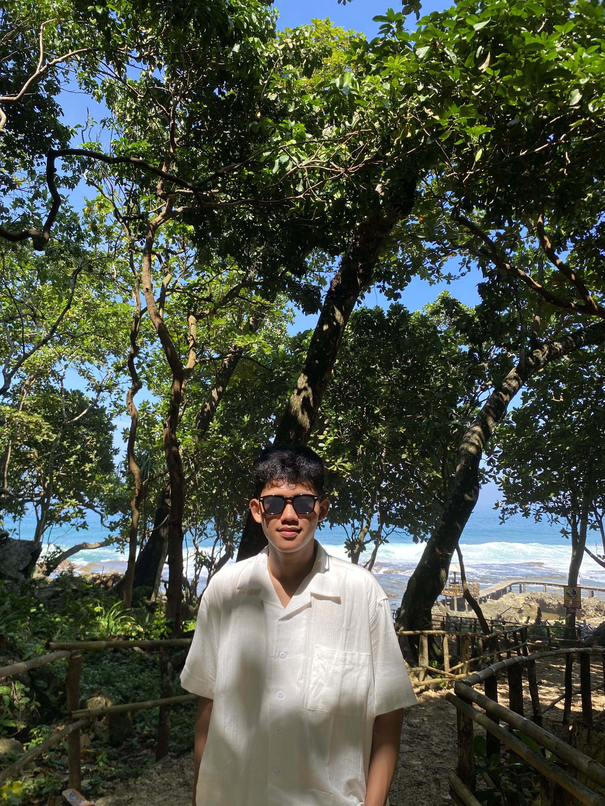

Curriculum Vitae
Fatih Ludy Aryasatya
Mahasiswa Teknik Informatika
- Teknik informatika bukan sekadar mempelajari sintaks kode, melainkan membangun logika sistem untuk menyelesaikan permasalahan dunia nyata secara efektif dan efisien.
Data Pribadi
- Nama
- Fatih Ludy Aryasatya
- Tempat, Tanggal Lahir
- Jepara, 07 Oktober 2005
- Jenis Kelamin
- Laki-Laki
- Agama
- Islam
- Tinggi Badan
- 177 Cm
- Berat Badan
- 66 Kg
- Alamat
- Citra Indah Bukit Menteng Blok A 8/38
Kel. Sukamaju, Kec. Jonggol - Handphone
- 0855451611314
- Status
- Belum Menikah
- GitHub
- github.com/fatihludyaryasatya/pelatihan-bnsp-day-3.git
Data Pendidikan
- Sekolah Dasar SDS Tiara School 2
- SMP MTs Jonggol
- SMA MAN 3 Bogor
- Perguruan Tinggi Universitas Nahdlatul Ulama Indonesia
Kemampuan
Informasi Teknologi
- HTML
- CSS
- JavaScript
Pengalaman
Fresh Graduate